早上睡醒大約是八點半，夜裡迷迷糊糊之中好像有什麼重要的事情還沒有做，
但就算有什麼天大的事情，也沒力去完成，所以就算了吧∼先睡再說。
睡醒才想起來，衣服在洗手台泡了一整晚都還沒拿出來晾乾。
現在才發現已經太晚了，只好穿著第二套衣服，也就是我的睡衣騎車。
一口氣睡了十二個小時，覺得狀況比昨天好很多，大概相當於從旅館剛發現身體有異狀的情形。
沖個澡，把衣服洗起來，躺在床上補寫昨天的遊記，撐到將近11點才離開旅館。
要不是這間旅館超級貴，不然真想再睡一天，把體力全部睡回來。
感冒的病人吃什麼最好呢？當然是又熱又好消化的鹹稀飯啦。
可是在法國誰煮鹹稀飯給你吃？
這時候就要多虧華人漂泊的韌性，到處都有的中國餐館，這邊也不例外。
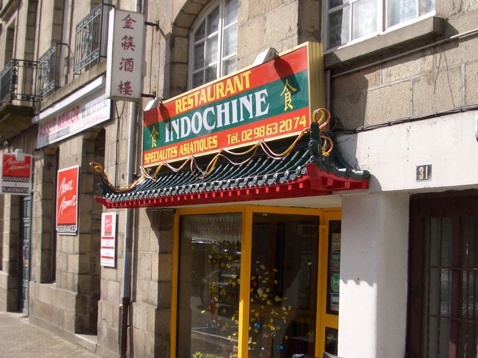
可惜同樣是華人，語言卻不通，似乎是越南人，比手畫腳很難說明什麼是稀飯。
我就在紙上畫了一碗我認為是稀飯的東西，然後蠻心期待的等著我的食物上桌。
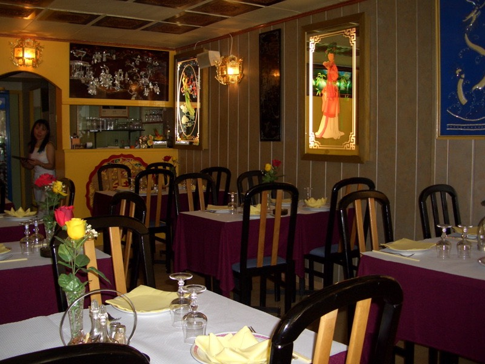
最後送來上一碗鮮蝦雞絲湯麵。
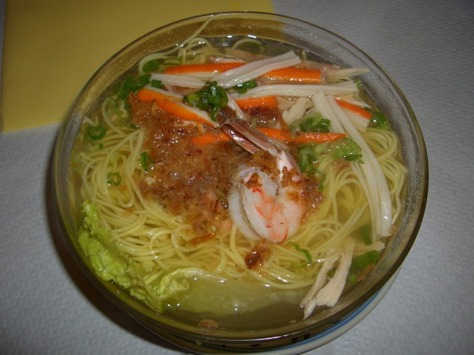
雖然跟想吃的有一小段距離，但熱熱的湯，QQ的麵，熟悉的味道，吃起來還是很令人感動。
老闆看我一口一口的吃完，問我好吃嗎？當然好吃 T_T 謝謝老闆煮麵給我吃。
一碗麵，6歐元，在台灣是天價，在這邊，能吃到就算滿足了。
吃完麵，再嗑一粒感冒藥，目前時刻，中午十二點剛過，豔陽天。
要像昨天一樣不把自己當人看嗎？
很幸運的發現旅遊諮詢中心，也終於看到裡面有服務人員。
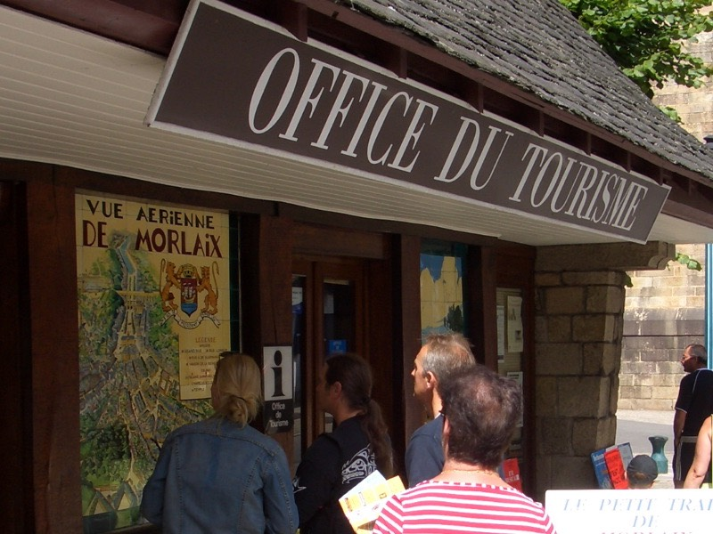
問了問能不能搭巴士離開這裡，結果只有火車可以搭，依照她畫的小地圖，
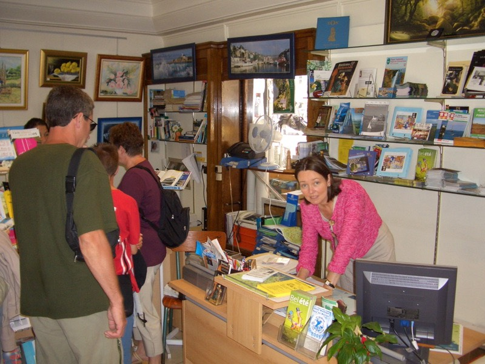
奮力的爬著上坡到車站，才騎10分鐘，就累得差點要趴在地上喘氣。
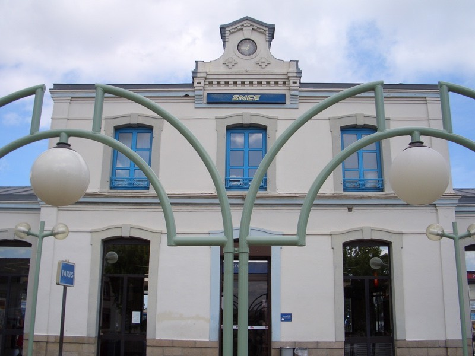
有這麼誇張嗎？不過是個小感冒，就可以搞成這樣，又不是伊波拉病毒。
今天本來要騎車去布雷斯特，就偷懶搭火車過去吧，反正要離開這裡的路也通通禁行腳踏車。
票價是9歐元，腳踏車可以上火車，付錢取票才發現，火車要下午的五點半才發車。
還要等上五個小時，趁機會休息一下，昨天睡了12個小時，現在還有辦法睡嗎？
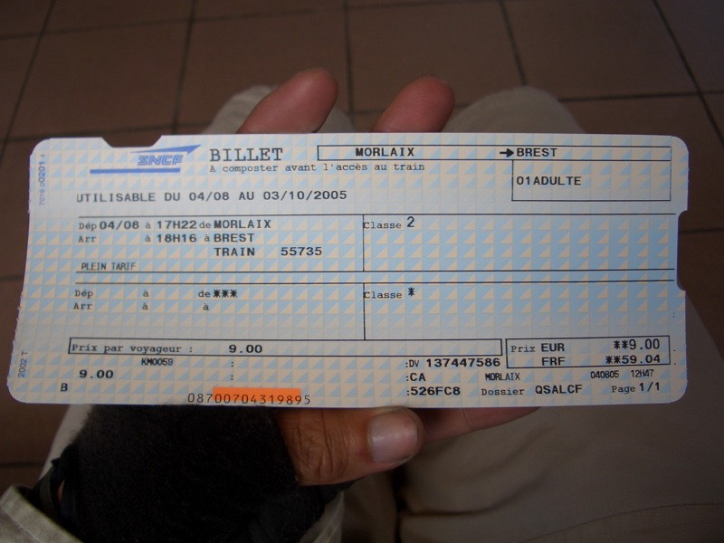
答案是肯定的，坐在車站的椅子上，趴在FCR1的把手，昏沈沈的睡到下午三點。
睡醒後去自動販賣雞，投....不，是把錢放到板子推上去後，買了一包1歐元的笑臉餅乾。
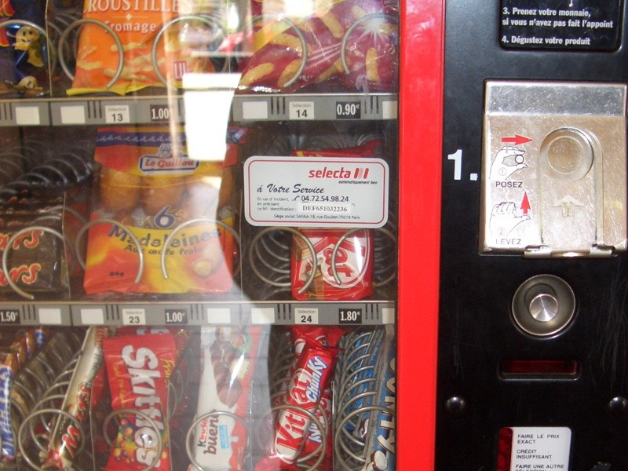
醒來後還有兩個小時，身體狀況又覺得好了不少，牽著車子回鎮上找找無線網路的訊號。
只要看到WANADOO的基本上就可以放棄了，這相當於台灣的HiNet，但網路通通加密。
後來在露天咖啡店找到訊號，也不知道是不是店裡的，只是越靠近這邊信號越強。
就在這裡把可憐的遊記給上傳，上網到四點半，別忘了有火車要趕，再度爬坡回車站。。
這次爬上去沒有累得要趴在地下喘，體力逐漸恢復中∼吃藥果然有效。
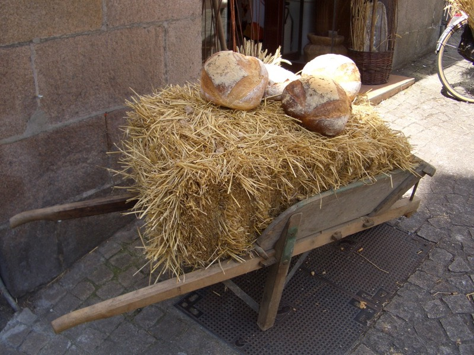
坐在月台打著上半日的遊記，打著打著，明明已經五點二十分了，怎麼還沒看到火車呢？
趕緊把iBook收起來，牽著車找人問，原來第一月台是很∼∼長的，我坐在第一月台的頭，
火車停在第一月台的尾，只有一節的小小車廂，一節的火車唷∼還真是第一次搭。
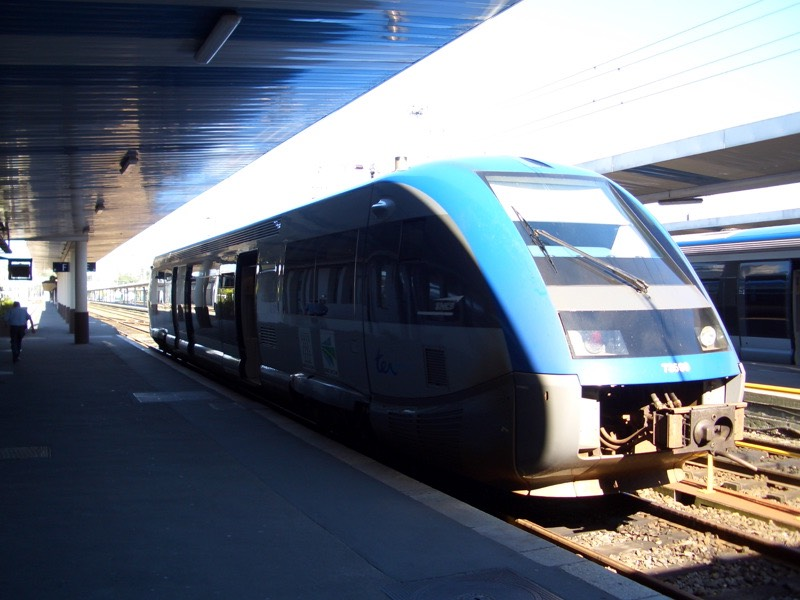
一上車，沒十秒鐘門關起來就開動了 >"<
要是再晚個一分鐘，就要白花車資滯留在山中小鎮住昂貴旅館。
車內很寬廣，FCR1可以輕而易舉的停著不會礙到別人，這才叫可以帶腳踏車上火車嘛。
火車上也有其他乘客也帶單車進來，車掌也不會碎碎念叫你要先分解裝袋了才能上車。
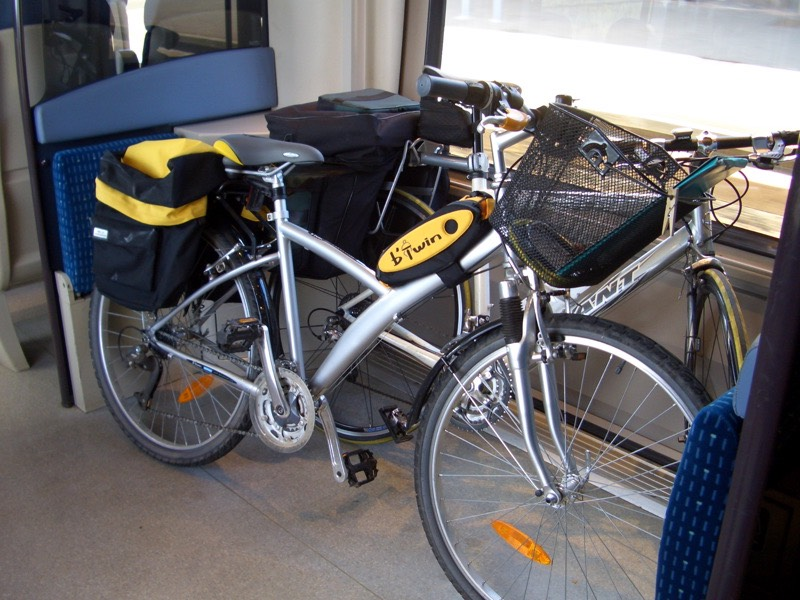
一路到布雷斯特車程約一小時，到了之後找間旅館，再吃點熱的補充養分。
睡它個一大覺，希望明天早上又是生龍活虎。
一小時候，火車很準時的在六點十六分到達布雷斯特，這邊是法國有名的軍港。
難怪路上有數以百計穿著海軍衣服的軍人，但之後問了餐廳的老闆才知道他們不是法國人。
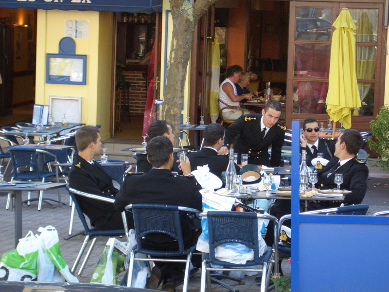
大概是路過此地的軍人吧，難怪每個都大包小包的跟觀光客一樣。
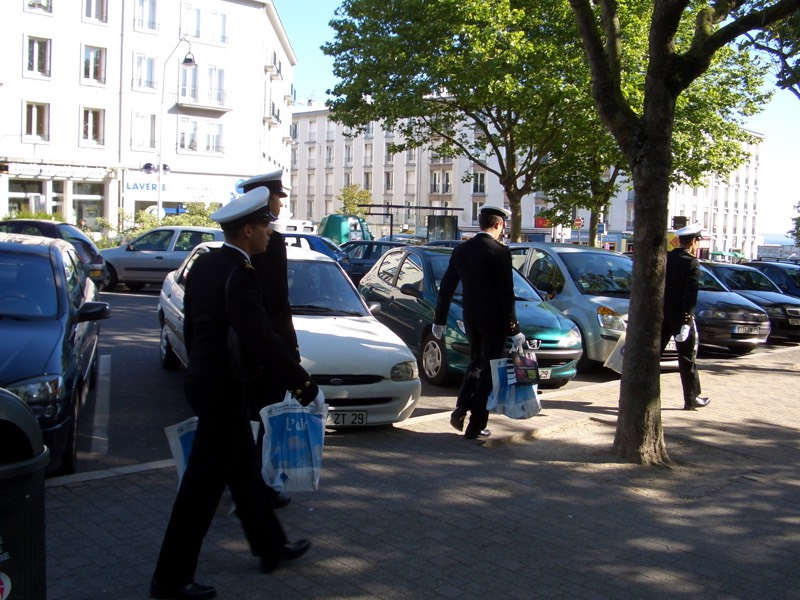
旅遊諮詢中心，在有人服務的時候，真的是旅行者最佳的去處。
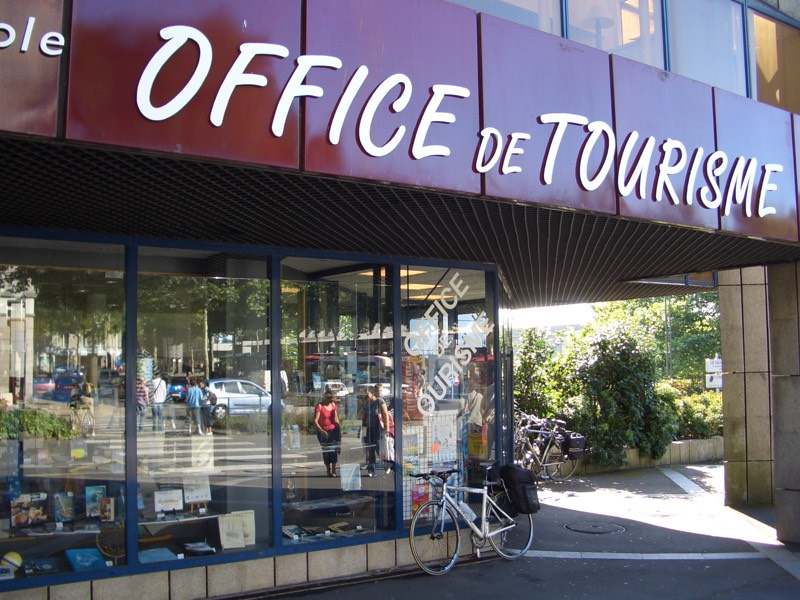
跟小姐說我想找旅館，馬上就拿了一張全城所有旅館的清單和地圖給我。
在請她將我選的三間最便宜旅館的位置標記在地圖上，謝謝妳，出發找旅館去吧∼
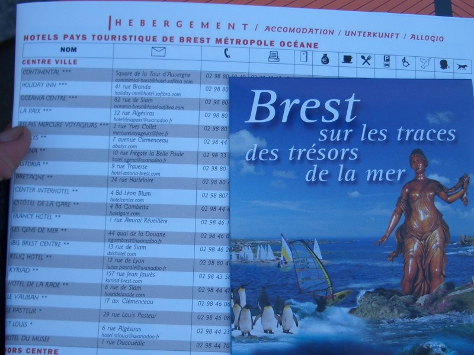
順著路一路問過去，第一間一星旅館，客滿。第二間一星旅館，也客滿。
嗯 ~"~ 跟我搶便宜旅館的人還真不少，問到第三間，小咖啡廳+書報攤附設的無星旅館，
總算有空房，而且價錢很便宜，23歐元一晚上，卡緊訂房。
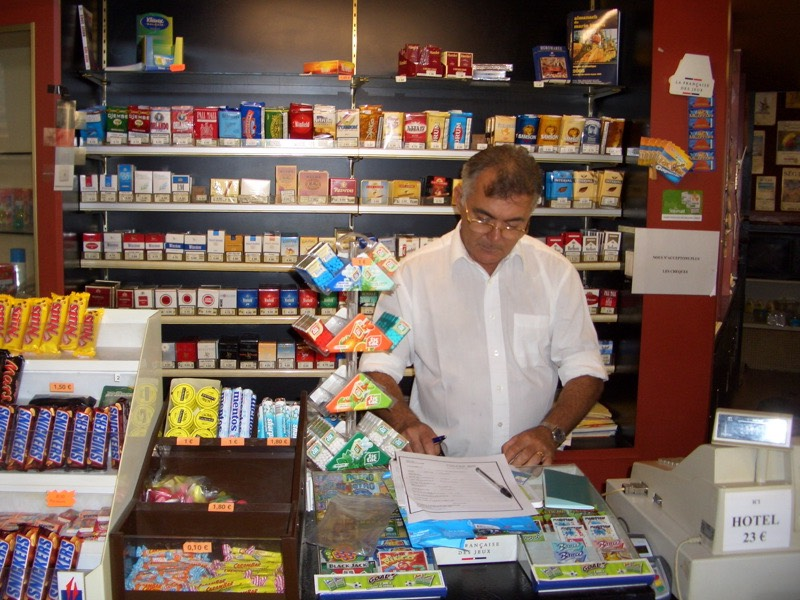
卸下包包後，騎車空車開始閒晃布雷斯特
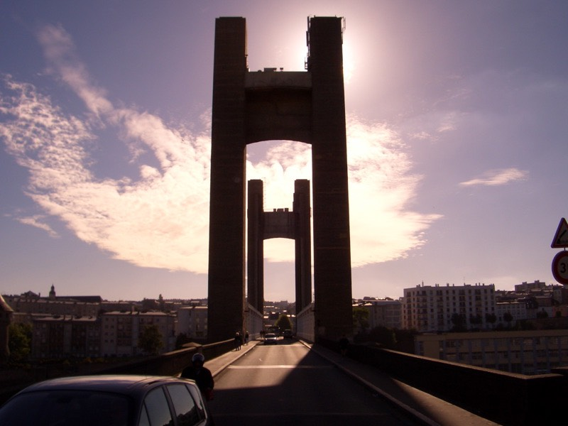
看到CL銀行，明天也差不多要換旅支了。
造船廠？
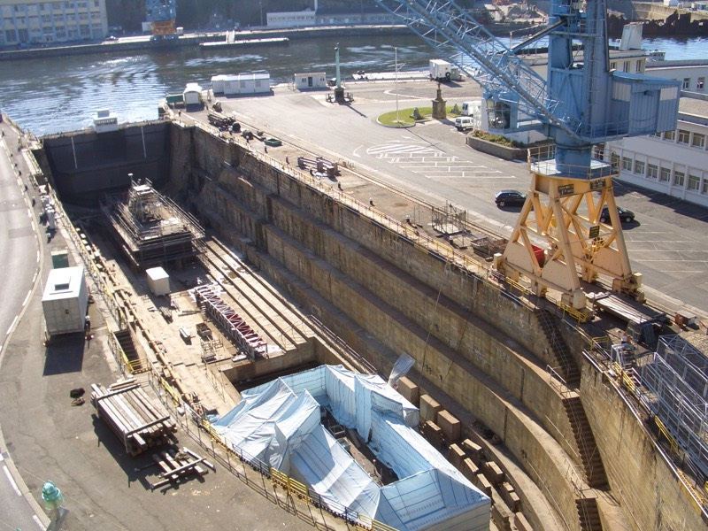
那些船隻，通通都是軍艦唷，加上那城牆，根本就是航海王裡面的海軍堡壘嘛∼
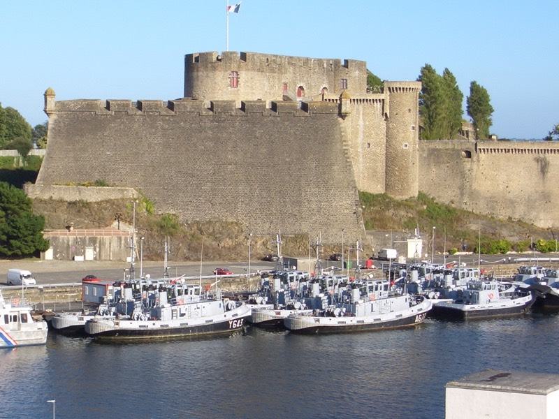
既然靠海，晚餐想換點口味，吃些海鮮類的食物。
行雲流水的菜單，有看沒有懂∼
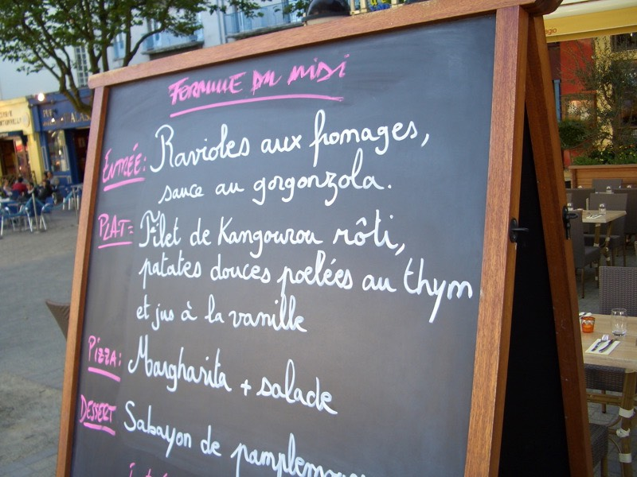
大概八、九點左右，垃圾車會開始工作，安安靜靜的作業，不會播放『獻給愛莉絲』。
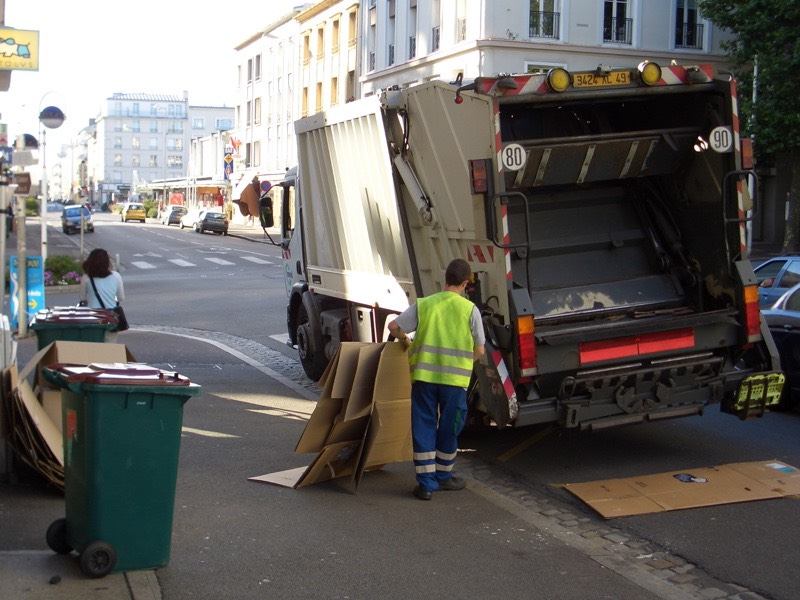
晃了半小時，大餐館人都好多，不想去人擠人，找到一間感覺蠻不錯的小餐館。
就當它的第一個客人吧∼
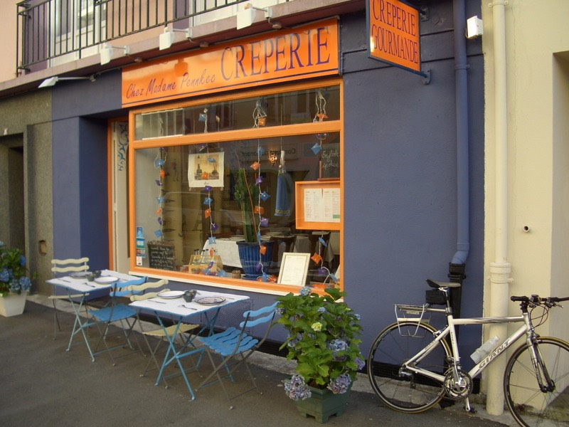
老闆人很好，知道我看不懂法文，就用英文跟我解釋菜單上的東西。
我說我想吃海鮮類的，請端出店裡好吃的東西都可以。
老闆推薦飲料，法國西北部地區的名產『蘋果酒（CIDRE）』，試喝了一小杯覺得不錯喝。
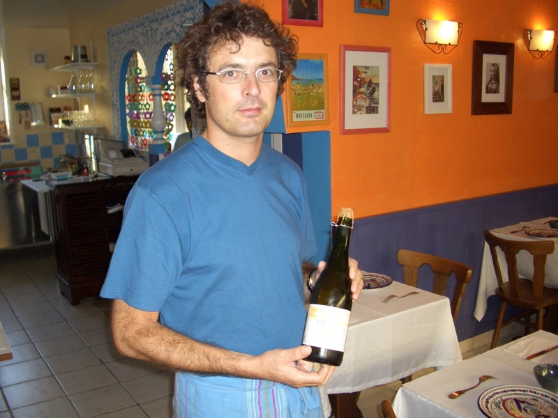
於是就開了一瓶，別以為很貴，其實才4歐元，喝起來像是蘋果汁+香檳，但又比那味道有深度。
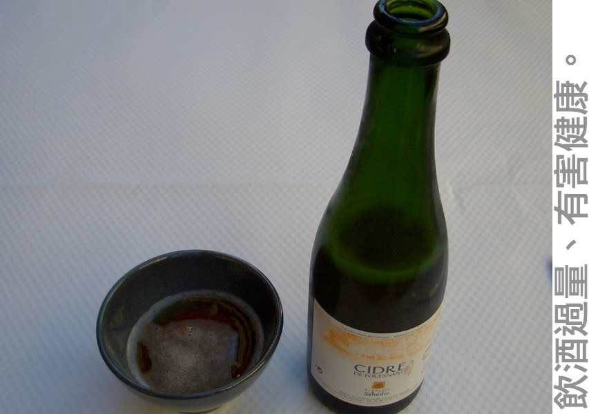
晚餐吃的一樣是薄煎餅，原來這也是西北部的地方食物，而海鮮就是干貝類的東西。
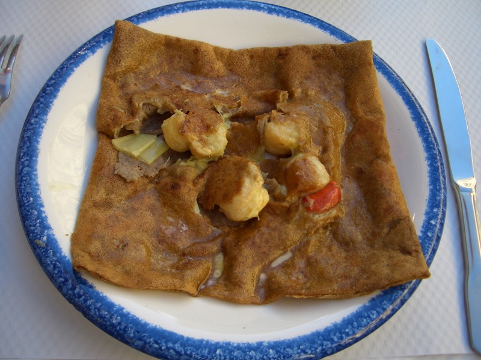
再加上一盤真的很綠色的『綠沙拉』，醬汁應該是橄欖油加不明物，這樣吃起來，11.2歐元。
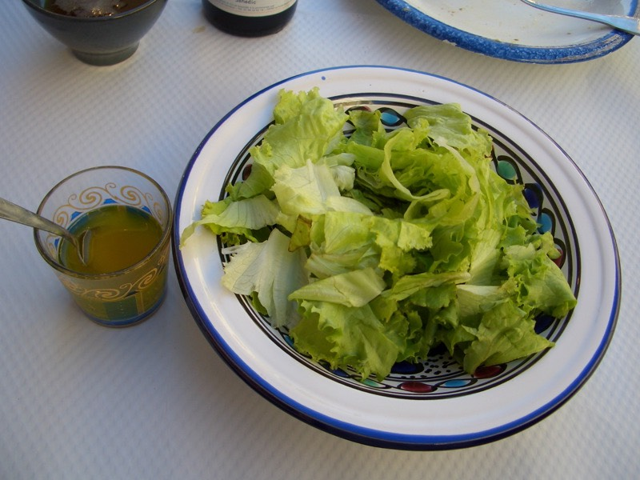
也觀察到了薄煎餅的製作過程，真的跟可麗餅很像。
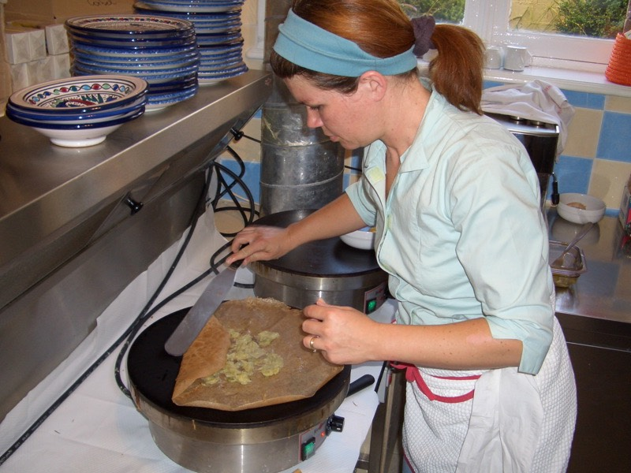
好吃是好吃，但是吃不太飽，嘴饞又去買了國民食物，KEBAB，不同地區的KEBAB還是有所差異。
這邊的是用薄餅捲起薯條+煎牛排，還以為會比較貴，結果也一樣是4歐元。
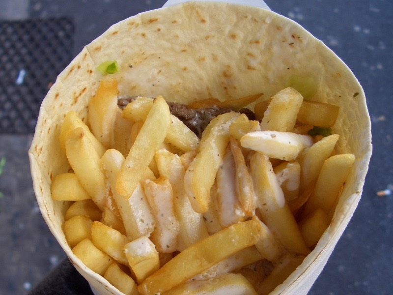
吃飽後別忘了吃感冒藥，經過一天的休養，還有美食的補給，狀況恢復良好，明天應該能繼續騎了∼